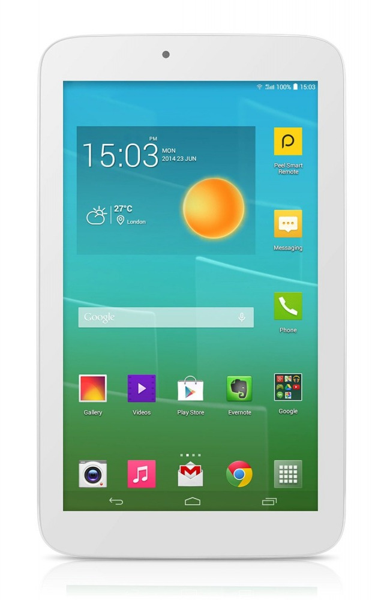

Alcatel OneTouch Pop 7S (alcatel-pop7lte)
|
 Alcatel OneTouch Pop 7S | |
| Manufacturer | Alcatel |
|---|---|
| Name | OneTouch Pop 7S (P330X) |
| Codename | alcatel-pop7lte |
| Released | 2014 |
| Category | testing |
| Original software | Android 4.3 or 4.4.2 |
| postmarketOS kernel | 3.4.0 |
| Hardware | |
| Chipset | Qualcomm Snapdragon 400 (MSM8226) |
| CPU | 4 cores up to 1.2 GHz Cortex-A7 (32bit) |
| GPU | Qualcomm Adreno 306 GPU |
| Display | 1024×600 px, 7.0" in (17.78 cm) diagonal, WSVGA IPS LCD display (touchscreen: FocalTech FT5436) |
| Storage | 16 GB eMMC 4.5 flash memory, microSDXC slot |
| Memory | 1 GB |
| Architecture | armv7 |
{kind=link}
| USB Networking |
Works
|
|---|---|
| Flashing |
Partial
|
| Touchscreen |
Partial
|
| Display |
Works
|
| WiFi |
Partial
|
| FDE | |
| Mainline |
Broken
|
| Battery |
Partial
|
| 3D Acceleration |
Broken
|
| Audio |
Partial
|
| Bluetooth |
Partial
|
| Camera |
Broken
|
| GPS |
Broken
|
| Mobile data |
Broken
|
| SMS |
Broken
|
| Calls |
Broken
|
| USB OTG / USB-C Role switching | |
| NFC | |
| Accelerometer |
Broken
|
|---|---|
| Magnetometer | |
| Ambient Light | |
| Proximity | |
| Hall Effect | |
| Barometer | |
| Power Sensor | |
| Camera Flash | |
|---|---|
| Keyboard | |
| Touchpad | |
| USB-A | |
| HDMI/DP | |
| Ir TX | |
| Ir RX | |
| Stylus | |
| Haptics | |
| Ethernet | |
| FOSS bootloader | |
Contributors
Maintainer(s)
Users owning this device
- Thejsa (Notes: Damaged touchscreen, cellular doesn't work, but boots pmOS to xfce)
How to enter flash mode
I have as yet been unable to find a way to directly enter fastboot on this device, nor have I been able to find any hint of custom Android ROM / custom recovery development for this or info on sites like XDA-Developers.
However, one is able to reboot into the bootloader from a running Android system through ADB by running `adb reboot-bootloader` on one's host system.
Installation
In theory you should be able to directly install onto the device, but due to the aforementioned difficulties getting into fastboot I have not tried this. All of my testing has been undertaken by installing onto an SD card (pmbootstrap install --sdcard [device]) and directly booting the kernel using pmbootstrap flasher boot.
Bootloader unlocking
I was able to unlock the bootloader on my device with a simple fastboot oem unlock, although I did not test if this works if the device is still carrier locked (in the UK, these devices were mainly sold cheaply -- and carrier locked -- by EE and O2; I was able to obtain a carrier unlock code for my device for under £1 from an eBay seller as EE is slow and charges £9 at time of writing).
Touchscreen
The touchscreen in this device uses a FocalTech FT5436 controller - firmware is compiled into the kernel, is required for the driver to build, and is stored as .i files in the kernel tree in drivers/input/touchscreen. (I agree, this is yucky.)
tslib and libinput recognise the screen and tslib calibration seems to recognise touch inputs, but Weston does not (suspected driver issues?)
Touch input seems to work in xfce4, however (at least for moving the cursor), although incorrectly rotated (needs calibration).
WiFi
WiFi firmware is packaged but the prima/pronto driver appears to be missing in Alcatel's kernel tree :-(
See also
- pmaports!1072 Initial merge request